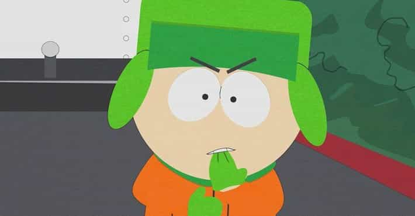

Персонаж мультсеріалу Південний Парк. Він один із чотирьох головних героїв, восьмирічних школярів. Прізвище Кайла може перекладатися як Брофловскі, Брословскі, Бровловскі, Брофлофскі.
Єврей за національністю.
Прізвище Кайла, ймовірно, походить від східноєвропейської прізвища Братиславський, Бреславський або Вроцлавський.
Одягнений зазвичай в яскраво-зелену шапку-вушанку (натяк на східноєвропейське походження сім'ї Кайла), помаранчеву курточку, темно-зелені штани і зелені рукавички. В епізоді Список за сімейним столом Кайлу були подані книші (білоруське блюдо), що також натякає на східноєвропейське походження сім'ї Кайла. Кайл навіть спить у вушанці, коли у нього перев'язана голова, то бинти накладені поверх шапки, але в тих рідкісних серіях, де він її знімає, видно пишна яскраво-червона зачіска в стилі афро.
Кайл - відмінник, один з найбільш розвинених і кмітливих учнів. Він єдиний єврей в класі, за що над ним регулярно знущається Ерік Картман. Кайл Брофловськи швидко навчається і схоплює суть предмета. Він реаліст, прагматик і скептик, найбільш розумно з усіх дивиться на речі, не вірить в містику і забобони, який звик нічого не приймати на віру. Коли жителів Південного парку і його друзів охоплює якесь нове захоплення, Кайл не бажає «бути як всі» і часто активно протистоїть нова мода (особливо добре це видно з серій «Чінпокомон», «Блакитний Саут-Парк» і «Мюзикл початкової школи »).
Хоча Кайл є юдеєм, з поведінки він більше схожий на атеїста. У деяких серіях міняв віросповідання: був хрещений (410), відрікався від віри (506). Кайл серйозніше всіх відноситься до подій навколо; в багатьох серіях він намагається глибоко аналізувати свою віру, події, що відбуваються в суспільстві і відносини між людьми. Нерідко фраза «Сьогодні я багато чого зрозумів», найчастіше сказана героями в кінці серії, вимовляється саме Кайлом, що робить розумний висновок з тієї чи іншої ситуації.

Будучи розумним і кмітливим дитиною, Кайл при бажанні може домагатися багато чого, часом за межею можливого: в 416 епізоді Кайл дуже хотів піти на концерт, але його батьки поставили, як їм здавалося, нездійсненну умову: побудувати демократію на Кубі, однак Кайл це зробив за один вечір, написавши зворушливий лист Фіделю Кастро. У той же час Кайл украй вразливий і його глибоко зачіпає те, що відбувається навколо або з ним самим. Поряд з Картманом, він один з найбільш емоційних учнів; тому часто, сам цього не усвідомлюючи, він діє під впливом своїх почуттів.
Стен, фактично все вони роблять разом, у важких ситуаціях Кайл приходить за допомогою в першу чергу саме до Стена, вони кілька разів рятували один одному життя, визнавалися в кращій дружбу. Їх недовгі сварки (як наприклад в серіях 218, 910, 1009) швидко закінчуються. Навіть в заставці Стен і Кайл співають разом. Кайл завжди бере участь в загальних пригоди дитячої компанії. Незважаючи на те, що, коли головні герої почали тісніше спілкуватися з Баттерсі, Кайл спочатку знущався над ним, пізніше їх відносини переросли в дружбу: в епізоді «Каса-Боніта» він запрошує його на день народження, і в подальшому іноді намагається захистити від поганого впливу Еріка. Також Кайл деякий час вкрай привертав Бібі. В епізоді «Захоплююча фонетика з мавпочкою» закохується в дівчинку на ім'я Ребекка, яка навчається на дому.